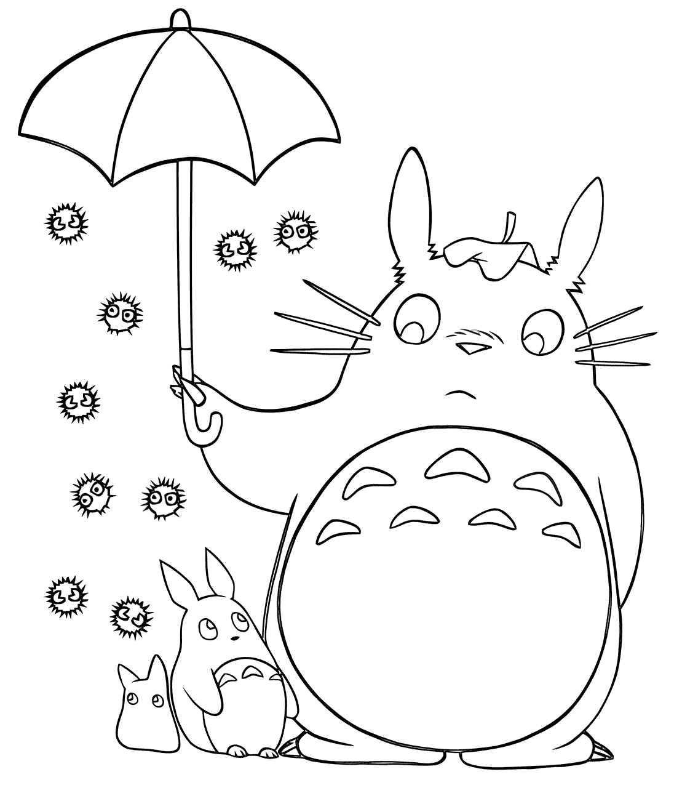

День четырнадцатый. Новые форматы!
Вчера я узналf, какой формат изображен/ия подходит для аватарки, и добавилf её в блог. Мне понравилось. Красиво же! Решилa сделать шпаргалку, чтобы не забыть, какие ещё форматы изображений существуют и для чего используются.
Например, есть такой формат как JPEG:
А вот формат PNG:
Ну и моя первая гифка: